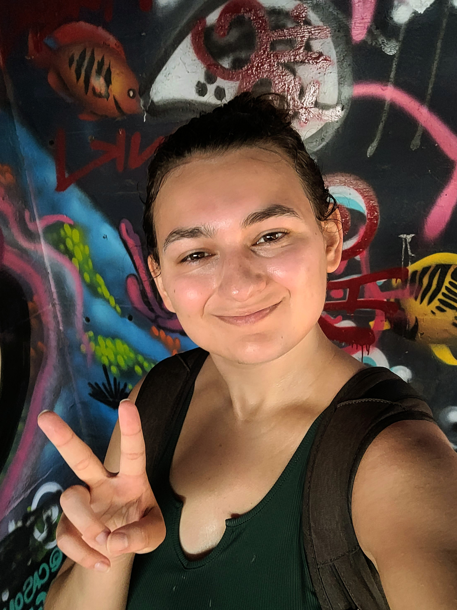
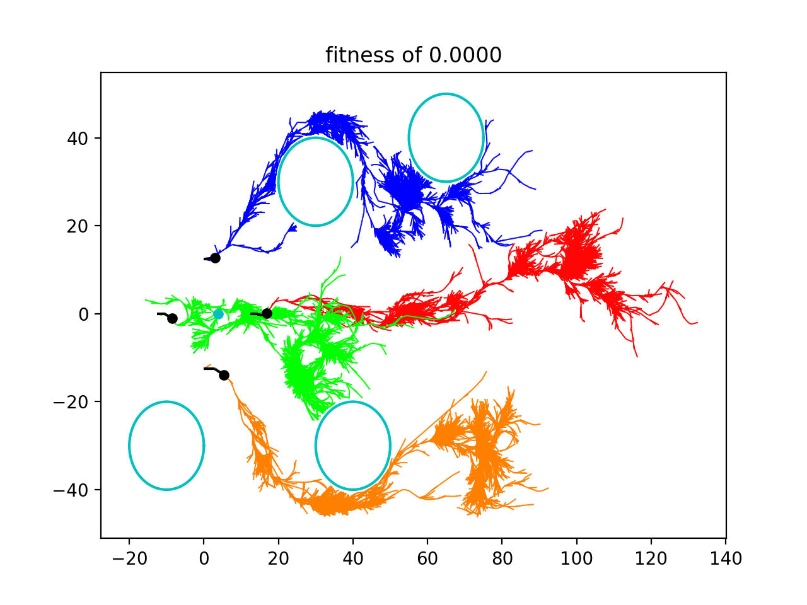
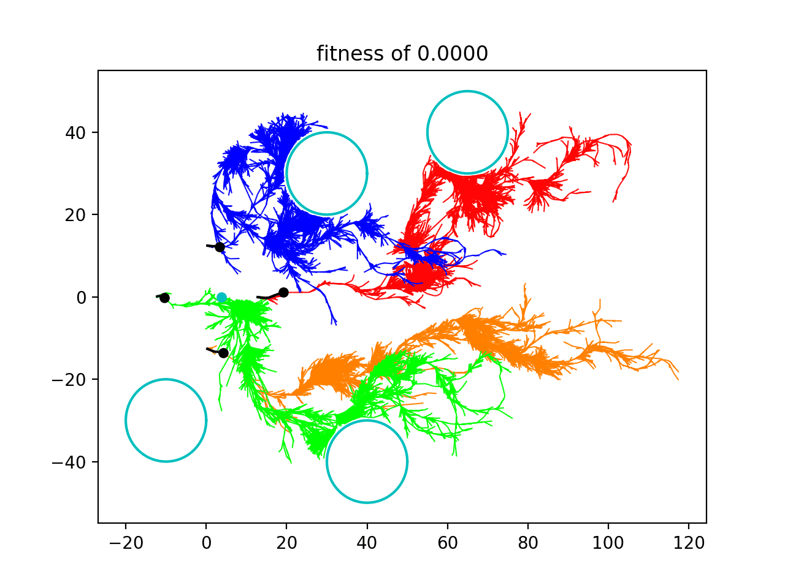
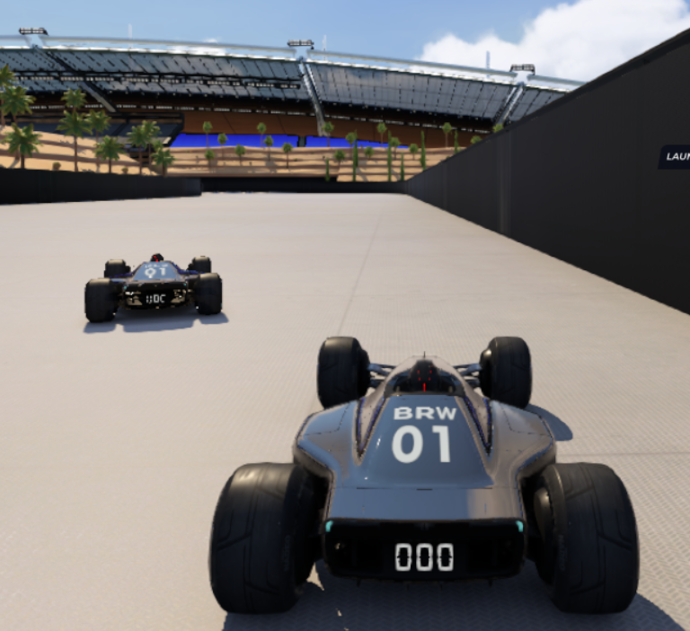

Kehlani Fay
Hello! My research is in robot learning, studying co-design for embodied intelligence. Embodiement informs both cognition and behavior - so I am interested in understanding what design attributes inform intelligence.
My PhD is co-advised by Professor Xiaolong Wang and Professor Michael Tolley . I have been fortunate to work with Professor Hao Su and Professor Deepak Pathak.
I am an NSF GRFP fellow.
Publications
International Conference on Learning Representations (ICLR), 2026
Conference on Robot Learning (CoRL), 2025



Symposium On Applied Computing, 2023
Works that never fully fermented, but still cool :)

Risk Aware Racing Agents: Learning Adaptive Policies in Competitive Racing Games
RSS Workshop